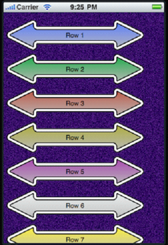

在实现书架的过程中，遇到一些问题，现在我们总结一下子：
（1）自定义一个继承UITableViewCell的类；
（2）在原有的tableviewcell中添加控件。
本程序中选择了第2中方式。
同时，也学习了如何自定义cell的方式。
其实现效果如图4所示：

图4
如上图的样子。 其实自定义table view的样子很简单，无非就是把table view和table view cell的背景变成透明的，然后在指定视图和cell的背景图片（当然，也可以指定table view的背景图片） ，其具体实现如下：
声明类：
@interface MainViewController : UIViewController <UITableViewDelegate, UITableViewDataSource>
{
UITableView *theTableView;
}
实现类：
- (id)init
{
if (self = [super init])
{
self.view = [[[UIView alloc] initWithFrame:[[UIScreen mainScreen] applicationFrame]] autorelease];
// Setup the background
UIImageView *background = [[UIImageView alloc] initWithImage:[UIImage imageNamed:@"background.png"]];
[self.view addSubview:background];
[background release];
// Create table view
theTableView = [[UITableView alloc] initWithFrame:CGRectMake(0, 11, 320, 460) style: UITableViewStylePlain];
[theTableView setDelegate:self];
[theTableView setDataSource:self];
// This should be set to work with the image height
[theTableView setRowHeight:68];
// Transparent, so we can see the background
[theTableView setBackgroundColor:[UIColor clearColor]];
[theTableView setSeparatorStyle:UITableViewCellSeparatorStyleNone];
[theTableView setIndicatorStyle:UIScrollViewIndicatorStyleWhite];
[self.view addSubview:theTableView];
}
return self;
}